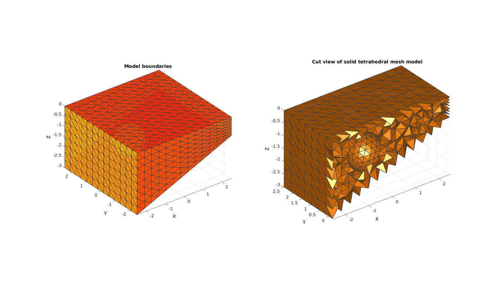
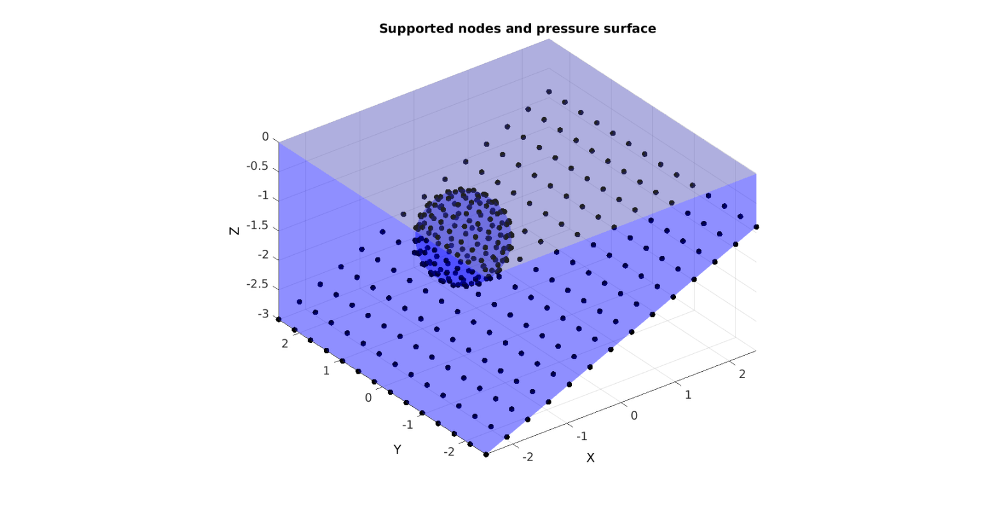
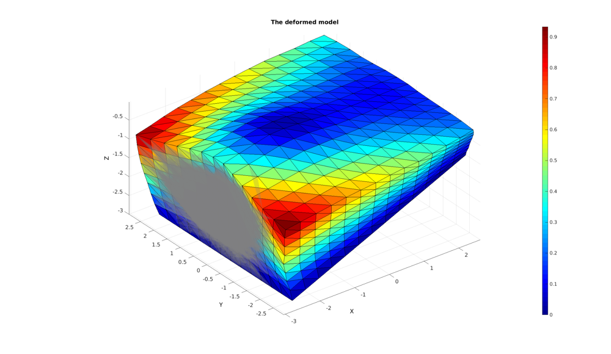

DEMO_FEBio_slab_pressure_loading_01
Below is a demonstration for:
- The creation of an FEBio model
- Running an FEBio job with MATLAB
- Importing FEBio results into MATLAB
Contents
clear; close all; clc;
Plot settings
fontSize=15; faceAlpha1=0.8; faceAlpha2=0.25; edgeColor=0.25*ones(1,3); edgeWidth=1.5; markerSize=25;
Control parameters
% path names defaultFolder = fileparts(fileparts(mfilename('fullpath'))); savePath=fullfile(defaultFolder,'data','temp'); modelName=fullfile(savePath,'tempModel'); %Specifying dimensions and number of elements sampleWidth=5; sampleThickness=5; sampleHeight=3; pointSpacing=0.4; numElementsWidth=round(sampleWidth/pointSpacing); numElementsThickness=round(sampleThickness/pointSpacing); numElementsHeight=round(sampleHeight/pointSpacing); nRefine=2; sphereRadius=sampleWidth/7; sphereShift=sphereRadius*1.4; sideSupportOn=0; if sideSupportOn pressureLevel=-3e-1; %Much higher since now bulk modulus has a dominant response else pressureLevel=-2e-3; %Low end % FEA control settings numTimeSteps=10; %Number of time steps desired max_refs=25; %Max reforms max_ups=0; %Set to zero to use full-Newton iterations opt_iter=6; %Optimum number of iterations max_retries=5; %Maximum number of retires dtmin=(1/numTimeSteps)/100; %Minimum time step size dtmax=1/numTimeSteps; %Maximum time step size
Creating a meshed box (4-node tetrahedral elements)
boxDim=[sampleWidth sampleThickness sampleHeight]; %Dimensions boxEl=[numElementsWidth numElementsThickness numElementsHeight]; %Number of elements [Fq,Vq,faceBoundaryMarker_q]=quadBox(boxDim,boxEl); [Ft,Vt,faceBoundaryMarker_t]=quad2tri(Fq,Vq,'f',faceBoundaryMarker_q);
Alter shape of box to have variable thickness
%Shift Z Vt(:,3)=Vt(:,3)-max(Vt(:,3)); %Create X coordinate based scaling factor A=0.3; Xf=Vt(:,1); Xf=Xf-min(Xf(:)); Xf=Xf./max(Xf(:)); Xf=1-(Xf*(1-A)); %Scale Z Vt(:,3)=Vt(:,3).*Xf;
CREATING MESHED SPHERE
[Fsp,Vsp,~]=geoSphere(nRefine,sphereRadius);
%Offset indentor
minZ=min(Vsp(:,3));
Vsp(:,3)=Vsp(:,3)-sphereShift;
Vsp(:,1)=Vsp(:,1)-sphereShift;
MERGING NODE SETS
V=[Vt;Vsp;]; %Nodes
F=[Ft; Fsp+size(Vt,1)];
faceBoundaryMarker=[faceBoundaryMarker_t; max(faceBoundaryMarker_t(:))+ones(size(Fsp,1),1)];
Mesh using tetgen
[regionA]=tetVolMeanEst(F,V); %Volume for regular tets stringOpt='-pq1.2AaYQ'; smeshName=[modelName,'.smesh']; smeshStruct.stringOpt=stringOpt; smeshStruct.Faces=F; smeshStruct.Nodes=V; smeshStruct.holePoints=mean(Vsp,1); smeshStruct.faceBoundaryMarker=faceBoundaryMarker; %Face boundary markers smeshStruct.regionPoints=[0 0 -0.01]; %region points smeshStruct.regionA=regionA; smeshStruct.minRegionMarker=2; %Minimum region marker smeshStruct.modelName=smeshName; [meshOutput]=runTetGen(smeshStruct); %Run tetGen
%%%%%%%%%%%%%%%%%%%%%%%%%%%%%%%%%%%%%%%%%%%%% --- TETGEN Tetrahedral meshing --- 21-Dec-2017 14:08:19 %%%%%%%%%%%%%%%%%%%%%%%%%%%%%%%%%%%%%%%%%%%%% --- Writing SMESH file --- 21-Dec-2017 14:08:19 ----> Adding node field ----> Adding facet field ----> Adding holes specification ----> Adding region specification --- Done --- 21-Dec-2017 14:08:19 --- Running TetGen to mesh input boundary--- 21-Dec-2017 14:08:19 Opening /mnt/data/MATLAB/GIT/GIBBON/lib_ext/tetGen/tempFiles/tempModel.smesh. --- Done --- 21-Dec-2017 14:08:19 %%%%%%%%%%%%%%%%%%%%%%%%%%%%%%%%%%%%%%%%%%%%% --- Importing TetGen files --- 21-Dec-2017 14:08:19 --- Done --- 21-Dec-2017 14:08:19
Access model element and patch data
FT=meshOutput.faces;
VT=meshOutput.nodes;
CT=meshOutput.faceMaterialID;
E=meshOutput.elements;
% E=fliplr(E);
Fb=meshOutput.facesBoundary;
faceBoundaryMarker=meshOutput.boundaryMarker;
Plotting surface models
hf=cFigure; title('Model surfaces','FontSize',fontSize); xlabel('X','FontSize',fontSize); ylabel('Y','FontSize',fontSize); zlabel('Z','FontSize',fontSize); hold on; patch('Faces',Fb,'Vertices',VT,'FaceColor','flat','CData',faceBoundaryMarker,'FaceAlpha',faceAlpha1,'lineWidth',edgeWidth,'edgeColor',edgeColor); colormap(jet(6)); colorbar; set(gca,'FontSize',fontSize); view(3); axis tight; axis equal; grid on; drawnow;

Plotting the meshed geometry
hf1=cFigure; subplot(1,2,1); title('Model boundaries','FontSize',fontSize); xlabel('X','FontSize',fontSize); ylabel('Y','FontSize',fontSize); zlabel('Z','FontSize',fontSize); hold on; hps=patch('Faces',Fb,'Vertices',VT,'FaceColor','flat','CData',faceBoundaryMarker,'lineWidth',edgeWidth,'edgeColor',edgeColor,'FaceAlpha',faceAlpha1); view(3); axis tight; axis equal; grid on; colormap(autumn); set(gca,'FontSize',fontSize); drawnow; subplot(1,2,2); %Selecting half of the model to see interior Y=VT(:,2); YE=mean(Y(E),2); L=YE>mean(Y); [Fs,Cs]=element2patch(E(L,:),CT(L),'tet4'); title('Cut view of solid tetrahedral mesh model','FontSize',fontSize); xlabel('X','FontSize',fontSize); ylabel('Y','FontSize',fontSize); zlabel('Z','FontSize',fontSize); hold on; hps=patch('Faces',Fs,'Vertices',VT,'FaceColor','flat','CData',Cs,'lineWidth',edgeWidth,'edgeColor',edgeColor); view(3); axis tight; axis equal; grid on; colormap(autumn); camlight headlight; set(gca,'FontSize',fontSize); drawnow;
DEFINE BC's
%Supported nodes logicRigid=faceBoundaryMarker==5 | faceBoundaryMarker==7; F_rigid=Fb(logicRigid,:); bcRigidListFull=unique(F_rigid(:)); if sideSupportOn logicRigid=faceBoundaryMarker==3 | faceBoundaryMarker==4; F_rigid_x=Fb(logicRigid,:); bcRigidList_x=unique(F_rigid_x(:)); logicRigid=faceBoundaryMarker==1 | faceBoundaryMarker==2; F_rigid_y=Fb(logicRigid,:); bcRigidList_y=unique(F_rigid_y(:)); end %Pressure surface logicPressure=faceBoundaryMarker==6; F_pressure=Fb(logicPressure,:);
Visualize BC's
hf=cFigure; title('Supported nodes and pressure surface','FontSize',fontSize); xlabel('X','FontSize',fontSize); ylabel('Y','FontSize',fontSize); zlabel('Z','FontSize',fontSize); hold on; patch('Faces',Fb,'Vertices',VT,'FaceColor','b','FaceAlpha',faceAlpha2,'edgeColor','none'); patch('Faces',F_pressure,'Vertices',VT,'FaceColor',0.5*ones(1,3),'FaceAlpha',faceAlpha2,'edgeColor','none'); plotV(VT(bcRigidListFull,:),'k.','MarkerSize',markerSize); if sideSupportOn plotV(VT(bcRigidList_x,:),'r.','MarkerSize',markerSize); plotV(VT(bcRigidList_y,:),'g.','MarkerSize',markerSize); end set(gca,'FontSize',fontSize); view(3); axis tight; axis equal; grid on; drawnow;
CONSTRUCTING FEB MODEL
FEB_struct.febio_spec.version='2.0'; FEB_struct.Module.Type='solid'; % Defining file names FEB_struct.run_filename=[modelName,'.feb']; %FEB file name FEB_struct.run_logname=[modelName,'.txt']; %FEBio log file name %Creating FEB_struct FEB_struct.Geometry.Nodes=VT; FEB_struct.Geometry.Elements={E}; %The element sets FEB_struct.Geometry.ElementType={'tet4'}; %The element types FEB_struct.Geometry.ElementMat={1*ones(1,size(E,1))}; FEB_struct.Geometry.ElementsPartName={'Tissue'}; % DEFINING MATERIALS %Material 1 uncoupled hyperelastic c1=1e-3; m1=12; k=1e3*c1; FEB_struct.Materials{1}.Type='Ogden'; FEB_struct.Materials{1}.Properties={'c1','m1','k'}; FEB_struct.Materials{1}.Values={c1,m1,k}; %Control section FEB_struct.Control.AnalysisType='static'; FEB_struct.Control.Properties={'time_steps','step_size',... 'max_refs','max_ups',... 'dtol','etol','rtol','lstol'}; FEB_struct.Control.Values={numTimeSteps,1/numTimeSteps,... max_refs,max_ups,... 0.001,0.01,0,0.9}; FEB_struct.Control.TimeStepperProperties={'dtmin','dtmax','max_retries','opt_iter'}; FEB_struct.Control.TimeStepperValues={dtmin,dtmax,max_retries,opt_iter}; %Defining surfaces FEB_struct.Geometry.Surface{1}.Set=F_pressure; FEB_struct.Geometry.Surface{1}.Type='tri3'; FEB_struct.Geometry.Surface{1}.Name='Pressure_surface'; %Defining node sets FEB_struct.Geometry.NodeSet{1}.Set=bcRigidListFull; FEB_struct.Geometry.NodeSet{1}.Name='bcRigidListFull'; if sideSupportOn FEB_struct.Geometry.NodeSet{2}.Set=bcRigidList_x; FEB_struct.Geometry.NodeSet{2}.Name='bcRigidList_x'; FEB_struct.Geometry.NodeSet{3}.Set=bcRigidList_y; FEB_struct.Geometry.NodeSet{3}.Name='bcRigidList_y'; end %Adding BC information FEB_struct.Boundary.Fix{1}.bc='x'; FEB_struct.Boundary.Fix{1}.SetName=FEB_struct.Geometry.NodeSet{1}.Name; FEB_struct.Boundary.Fix{2}.bc='y'; FEB_struct.Boundary.Fix{2}.SetName=FEB_struct.Geometry.NodeSet{1}.Name; FEB_struct.Boundary.Fix{3}.bc='z'; FEB_struct.Boundary.Fix{3}.SetName=FEB_struct.Geometry.NodeSet{1}.Name; if sideSupportOn FEB_struct.Boundary.Fix{4}.bc='x'; FEB_struct.Boundary.Fix{4}.SetName=FEB_struct.Geometry.NodeSet{2}.Name; FEB_struct.Boundary.Fix{5}.bc='y'; FEB_struct.Boundary.Fix{5}.SetName=FEB_struct.Geometry.NodeSet{3}.Name; end %Adding load information FEB_struct.Loads.Surface_load{1}.Type='pressure'; % FEB_struct.Loads.Surface_load{1}.Set=F_pressure; FEB_struct.Loads.Surface_load{1}.SetName=FEB_struct.Geometry.Surface{1}.Name; FEB_struct.Loads.Surface_load{1}.lcPar='pressure'; FEB_struct.Loads.Surface_load{1}.lcParValue=pressureLevel; FEB_struct.Loads.Surface_load{1}.lc=1; %Adding output requests FEB_struct.Output.VarTypes={'displacement','stress','relative volume'}; %Specify log file output run_node_output_name=[FEB_struct.run_filename(1:end-4),'_node_out.txt']; FEB_struct.run_output_names={run_node_output_name}; FEB_struct.output_types={'node_data'}; FEB_struct.data_types={'ux;uy;uz'}; %Load curves FEB_struct.LoadData.LoadCurves.id=1; FEB_struct.LoadData.LoadCurves.type={'linear'}; FEB_struct.LoadData.LoadCurves.loadPoints={[0 0;1 1];};
SAVING .FEB FILE
FEB_struct.disp_opt=0; %Display waitbars option
febStruct2febFile(FEB_struct);
%%%%%%%%%%%%%%%%%%%%%%%%%%%%%%%%%%%%%%%%%%%%% --- Writing FEBio XML object --- 21-Dec-2017 14:08:21 Adding Module level Adding Control level Adding Globals level Adding Material level Adding Geometry level ----> Adding node field ----> Adding element field ----> Adding tet4 element entries.... ----> Adding surface field ----> Adding NodeSet field Adding Boundary level ----> Defining fix type boundary conditions Adding Loads level ----> Defining surface loads Adding LoadData level ----> Defining load curves Adding Output level ----> Adding plotfile field ----> Adding logfile field Warning: Provided path of logfile is replaced by .feb file path. Only provide filename to avoid this warning Writing .feb file --- Done --- 21-Dec-2017 14:08:23
RUNNING FEBIO JOB
% FEBioRunStruct.FEBioPath='C:\Program Files\febio2-2.2.6\bin\febio2.exe'; FEBioRunStruct.run_filename=FEB_struct.run_filename; FEBioRunStruct.run_logname=FEB_struct.run_logname; FEBioRunStruct.disp_on=1; FEBioRunStruct.disp_log_on=1; FEBioRunStruct.runMode='external';%'internal'; FEBioRunStruct.t_check=0.25; %Time for checking log file (dont set too small) FEBioRunStruct.maxtpi=1e99; %Max analysis time FEBioRunStruct.maxLogCheckTime=3; %Max log file checking time [runFlag]=runMonitorFEBio(FEBioRunStruct);%START FEBio NOW!!!!!!!!
%%%%%%%%%%%%%%%%%%%%%%%%%%%%%%%%%%%%%%%%%%%%% --- STARTING FEBIO JOB --- 21-Dec-2017 14:08:23 Waiting for log file... Proceeding to check log file...21-Dec-2017 14:08:23 ------- converged at time : 0.1 ------- converged at time : 0.2 ------- converged at time : 0.3 ------- converged at time : 0.4 ------- converged at time : 0.5 ------- converged at time : 0.6 ------- converged at time : 0.7 ------- converged at time : 0.8 ------- converged at time : 0.9 ------- converged at time : 1 --- Done --- 21-Dec-2017 14:08:29
if runFlag==1 %i.e. a succesful run %IMPORTING NODAL DISPLACEMENT RESULTS % Importing nodal displacements from a log file [~, N_disp_mat,~]=importFEBio_logfile(FEB_struct.run_output_names{1}); %Nodal displacements DN=N_disp_mat(:,2:end,end); %Final nodal displacements % CREATING NODE SET IN DEFORMED STATE V_def=VT+DN; DN_magnitude=sqrt(sum(DN.^2,2)); % Plotting the deformed model [CF]=vertexToFaceMeasure(Fb,DN_magnitude); hf1=cFigure; title('The deformed model','FontSize',fontSize); xlabel('X','FontSize',fontSize); ylabel('Y','FontSize',fontSize); zlabel('Z','FontSize',fontSize); hold on; hps=patch('Faces',Fb,'Vertices',V_def,'FaceColor','flat','CData',CF); hps=patch('Faces',Fsp,'Vertices',V_def,'FaceColor',0.5*ones(1,3),'EdgeColor','none','FaceAlpha',0.25); view(3); axis tight; axis equal; grid on; colormap jet; colorbar; % camlight headlight; set(gca,'FontSize',fontSize); drawnow; end

GIBBON www.gibboncode.org
Kevin Mattheus Moerman, gibbon.toolbox@gmail.com
GIBBON footer text
License: https://github.com/gibbonCode/GIBBON/blob/master/LICENSE
GIBBON: The Geometry and Image-based Bioengineering add-On. A toolbox for image segmentation, image-based modeling, meshing, and finite element analysis.
Copyright (C) 2017 Kevin Mattheus Moerman
This program is free software: you can redistribute it and/or modify it under the terms of the GNU General Public License as published by the Free Software Foundation, either version 3 of the License, or (at your option) any later version.
This program is distributed in the hope that it will be useful, but WITHOUT ANY WARRANTY; without even the implied warranty of MERCHANTABILITY or FITNESS FOR A PARTICULAR PURPOSE. See the GNU General Public License for more details.
You should have received a copy of the GNU General Public License along with this program. If not, see http://www.gnu.org/licenses/.